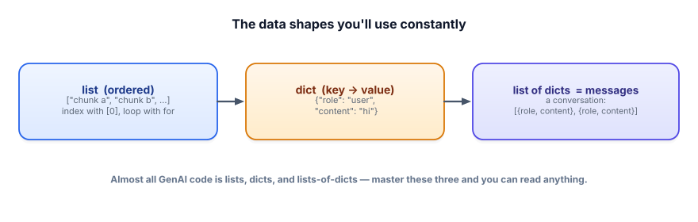

Python fluency: the next layer
The primer gave you the eight basics. This lesson adds the next handful of moves that show up in almost every piece of real GenAI code — comprehensions, dictionary tricks, multi-line prompts, safe JSON, and graceful error handling. Still beginner-paced, still $0.
Why this, and why now
Once you start wiring real models together, the same small patterns appear over and over: transform a list (turn raw documents into chunks), pull a field out of a dict (read a model’s JSON reply), build a prompt from pieces, and survive a call that misbehaves. None of these are advanced. But if they’re unfamiliar, real code looks scarier than it is. Spend twenty minutes here and the rest of the course reads like plain English. Open a free Google Colab notebook and run every snippet — predict the output first.
Before the patterns, one picture. Nearly all GenAI code moves three shapes around:

1 · Comprehensions: transform a list in one line
You constantly need to take a list and make a new list from it — lowercase every title, wrap every question in a prompt, keep only the long chunks. A list comprehension does that in a single readable line. Read it right-to-left: “for each item in the list, compute this.”
docs = [" Refunds ", "Shipping", " Returns"]
# the long way
clean = []
for d in docs:
clean.append(d.strip().lower())
# the comprehension way — same result, one line
clean = [d.strip().lower() for d in docs]
print(clean) # -> ['refunds', 'shipping', 'returns']You can add a filter with if on the end — keep only the items that pass:
lengths = [12, 480, 35, 900]
big = [n for n in lengths if n > 100]
print(big) # -> [480, 900]If a comprehension gets long or needs an if/else in the middle, just write the plain for loop. Readable beats clever. Comprehensions are a convenience, not a rule.
2 · Dictionary moves you’ll use daily
Models hand back dicts (a parsed JSON reply is a dict). Two habits make working with them painless. First, .get(key, default) safely reads a key that might be missing instead of crashing. Second, .items() loops over keys and values together.
reply = {"intent": "refund", "confidence": 0.82}
# [key] crashes if the key is absent; .get returns a fallback instead
print(reply.get("sentiment", "unknown")) # -> "unknown" (no crash)
for key, value in reply.items():
print(key, "=", value)
# intent = refund
# confidence = 0.82That .get habit is a quiet superpower: model output is unpredictable, and reaching for a key that isn’t there is one of the most common ways a script blows up in production.
3 · Building real prompts: multi-line and joined
Real prompts span several lines and often stitch in a list of things (retrieved snippets, few-shot examples). Two tools: triple-quoted strings """...""" hold multi-line text, and "\n".join(list) glues a list into one string with line breaks between items.
snippets = [
"Refunds are issued within 5 business days.",
"Items must be returned within 30 days.",
]
question = "How long do refunds take?"
context = "\n".join(snippets)
prompt = f"""Answer using ONLY the context below.
Context:
{context}
Question: {question}"""
print(prompt)That is, almost exactly, the core of a RAG prompt (Track 3). You join your retrieved snippets into a context block, then drop it and the question into a template with an f-string.
4 · Functions with sensible defaults
A default argument lets a function be called simply or with extra control. You set a value with = in the definition; callers can skip it or override it.
def ask(question, model="llama3.2", temperature=0.0):
return f"[{model} @ temp {temperature}] " + question
print(ask("What is RAG?")) # uses the defaults
print(ask("Be creative.", temperature=0.9)) # override just one, by nameNaming the argument you override (temperature=0.9) is clearer than relying on position, and it’s the style every AI library uses.
5 · Safe by default: try / except and JSON
Two things will go wrong constantly when you talk to models: a call fails (network, rate limit), or the model returns text that isn’t the clean JSON you asked for. A try/except block runs risky code and catches the failure instead of crashing the whole program.
import json
raw = '{"intent": "refund"' # oops — model cut off, invalid JSON
try:
data = json.loads(raw)
print("intent is", data["intent"])
except json.JSONDecodeError:
print("Model did not return valid JSON — retry or fall back.")This pattern — try to parse, handle the mess if it fails — is the backbone of every reliable LLM app. You’ll meet it again in structured output (Track 2) and guardrails (Track 7). The opposite of a brittle demo is code that expects the model to occasionally misbehave.
Putting it together
Here’s a small program that uses every move above to turn raw support tickets into prompts and safely read a (pretend) model reply — genuinely the shape of code you’ll write in Track 3 and beyond:
import json
tickets = [
{"id": 1, "text": "Where is my refund?"},
{"id": 2, "text": "Can I change my address?"},
]
def classify_prompt(text):
return f"Classify the intent of: '{text}'. Reply as JSON with an 'intent' key."
prompts = [classify_prompt(t["text"]) for t in tickets] # comprehension over dicts
for ticket, prompt in zip(tickets, prompts):
print("Ticket", ticket["id"], "->", prompt)
# pretend this came back from the model:
raw = '{"intent": "refund_status"}'
try:
result = json.loads(raw)
print("Parsed intent:", result.get("intent", "unknown"))
except json.JSONDecodeError:
print("Bad JSON — handle gracefully.")zip walks two lists together (each ticket beside its prompt); .get reads the reply safely. Nothing exotic — just the everyday toolkit.
Live demo: build a prompt template
Prompts are just strings you assemble from variables. Change the fields below and watch the full messages list (the list-of-dicts shape) build itself — exactly what you’d send to a model.
- Comprehensions
[f(x) for x in items]transform a list in one line; addifto filter. .get(key, default)reads a maybe-missing key without crashing;.items()loops keys and values.- Build prompts with triple-quoted strings and
"\n".join(list)— that’s the heart of a RAG prompt. - Default arguments make functions simple to call yet configurable; override by name.
try/except+json.loadsis how you survive flaky calls and messy model output — assume it’ll misbehave.
1. Given chunks = ["short", "a much longer chunk here", "tiny"], use a comprehension to build a new list of only the chunks with more than 5 characters.
2. Write safe_intent(raw) that takes a string, tries to parse it as JSON, and returns the value of its "intent" key — or the string "unknown" if the JSON is invalid or the key is missing.
▸ Show solution & reasoning
import json
# 1
chunks = ["short", "a much longer chunk here", "tiny"]
long_chunks = [c for c in chunks if len(c) > 5]
print(long_chunks) # -> ['a much longer chunk here']
# 2
def safe_intent(raw):
try:
data = json.loads(raw)
except json.JSONDecodeError:
return "unknown"
return data.get("intent", "unknown")Why it’s built this way: problem 1 filters with the trailing if, the single most common comprehension shape — you’ll use it to drop empty or oversized chunks. Problem 2 layers the two safety habits: try/except guards against text that isn’t JSON at all, and .get guards against valid JSON that’s simply missing the field. Real model output fails in both ways, so robust code defends against both. Notice the return "unknown" sits inside except so a parse failure exits early — after that line we know data is a usable dict.
A model is supposed to return JSON, but sometimes returns a friendly sentence instead. You write data = json.loads(reply) with no guard. What happens on a “friendly sentence” day?
The jump from hobby script to production engineer is mostly a shift in assumptions. A demo assumes the happy path: the call succeeds, the JSON is clean, the key is present. Production assumes the opposite and is pleasantly surprised. That’s not pessimism — it’s arithmetic. If a single call works 99% of the time, a task that makes ten calls works only about 0.99¹⁰ ≈ 90% of the time; an agent making fifty calls is near a coin-flip. Reliability comes from handling the boring 1% everywhere it can occur.
Concretely, that mindset becomes a few reflexes you’ll see throughout this course: parse defensively (try/except), read fields defensively (.get with a default), validate that output matches the shape you expected before using it (Track 7), and have a fallback ready (retry, a smaller request, a safe canned answer). The Python here is trivial; the discipline is the point. Learn to expect the messy 1%, and your software stops being a magic trick that works on stage and starts being a tool people can trust.
That’s the toolkit that makes real code legible. Next, lock it in with a short set of hands-on drills — small problems with worked solutions, so the patterns move from “I read it” to “I can write it.”